01 · Physics
Physics World State
Gravity-aware camera understanding and physically consistent trajectory propagation across long-horizon motion.
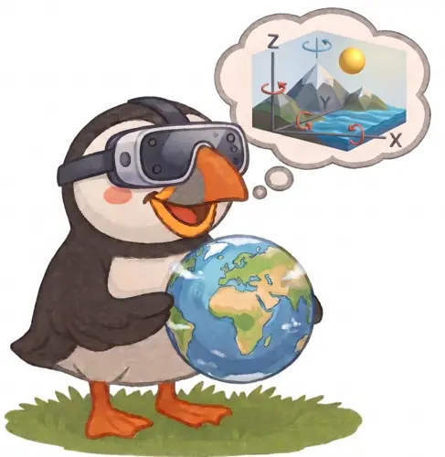
A unified multimodal world model
Scaling a Unified Multimodal Model
with Native 3D World States
1S-Lab, Nanyang Technological University 2University of Michigan 3Beijing Jiaotong University 4ACE Robotics
Preprint · 2026
Interactive 3D world explorer
Switch between ten generated worlds to inspect appearance, gravity, latitude, and geometry together with the corresponding interactive 3D reconstruction.
Drag orbit · Scroll zoom · Right-drag move
The reconstruction gently sweeps left and right while idle; interact at any time to inspect the world freely.
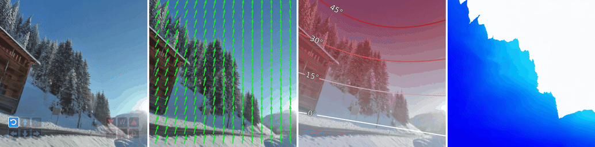
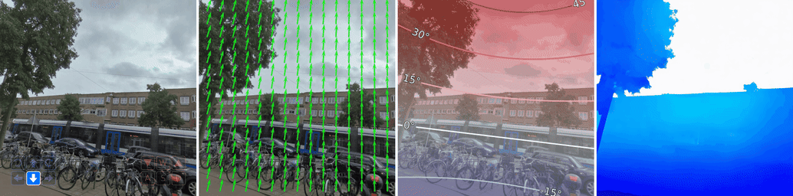
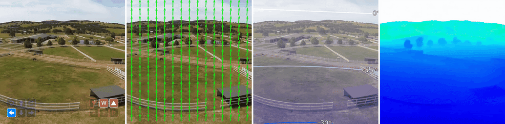
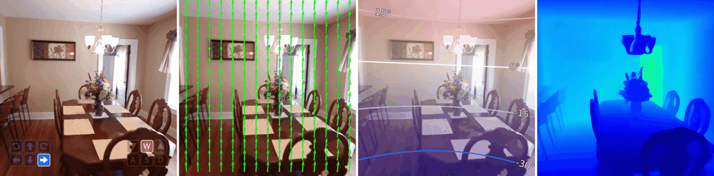
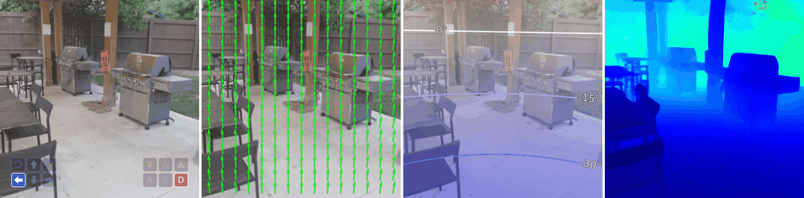
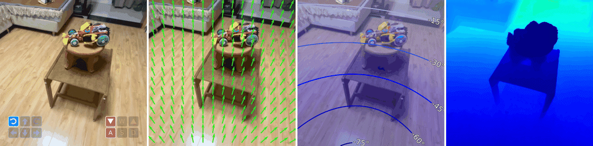
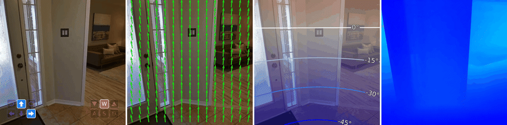
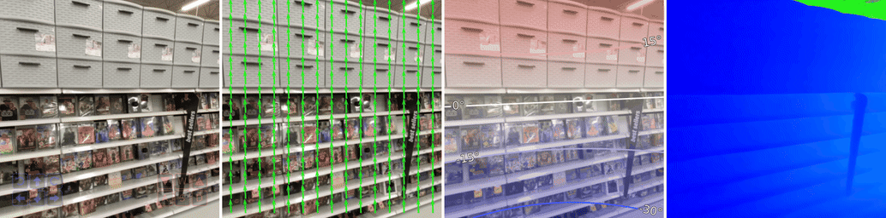
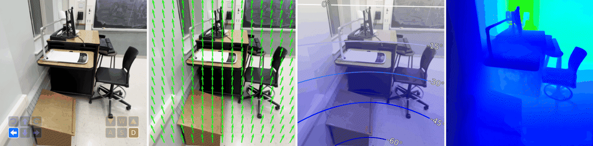
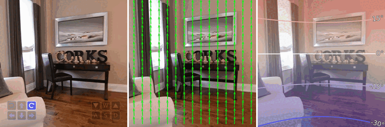
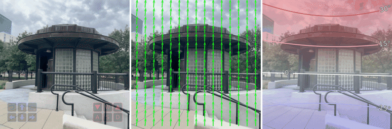
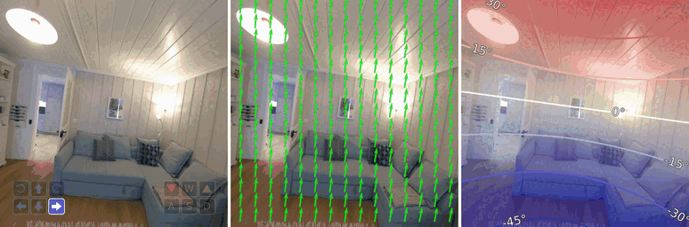
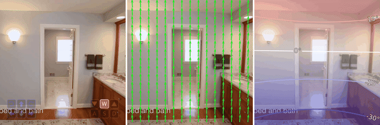
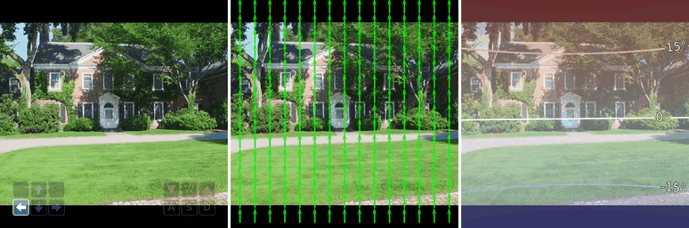
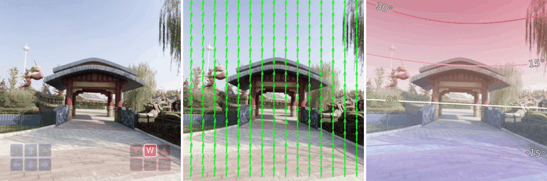
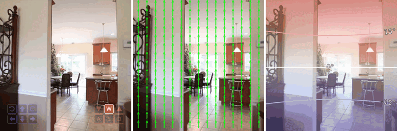
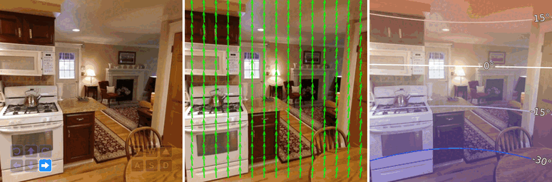
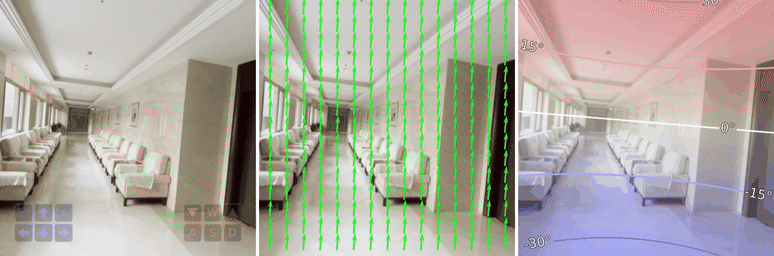
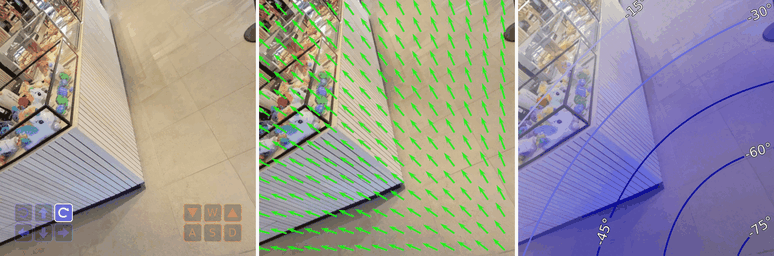
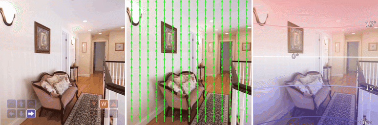
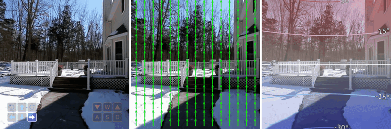
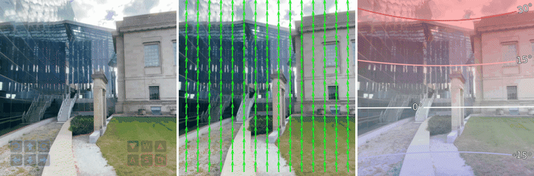
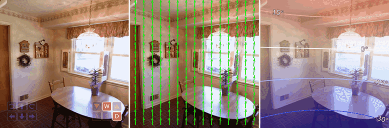
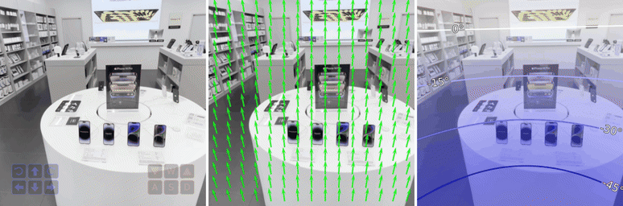
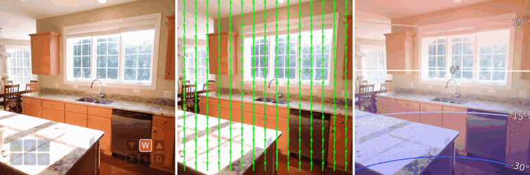
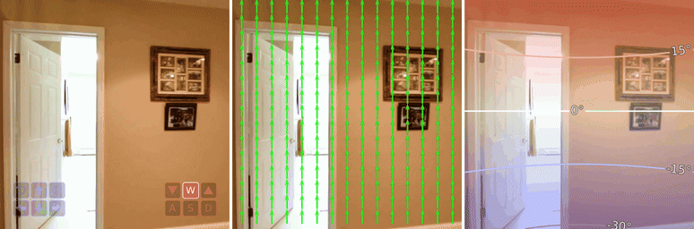
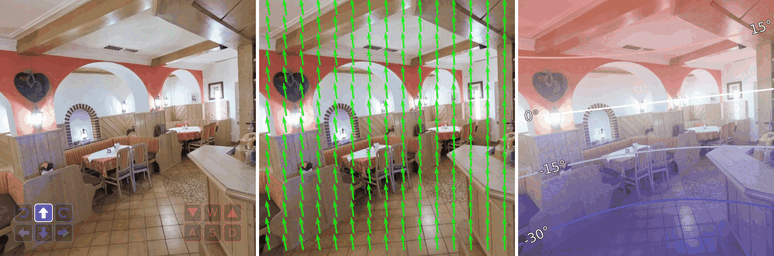
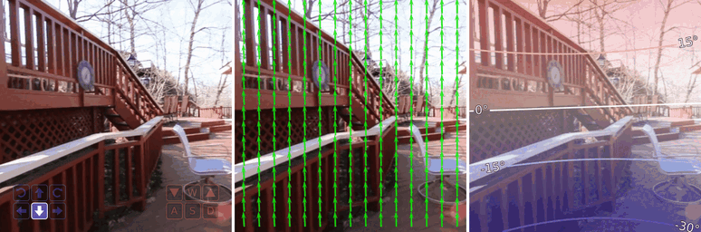
For each sample shown above, only the initial appearance world state (the first RGB view) is provided as input; all remaining world states are generated by Puffin-World.
Unified architecture
Puffin-World combines a geometry-aligned vision encoder, an LLM, a diffusion model, and a lightweight connector. It supports understanding, generation, and reconstruction without relying on task-specific external geometry modules.
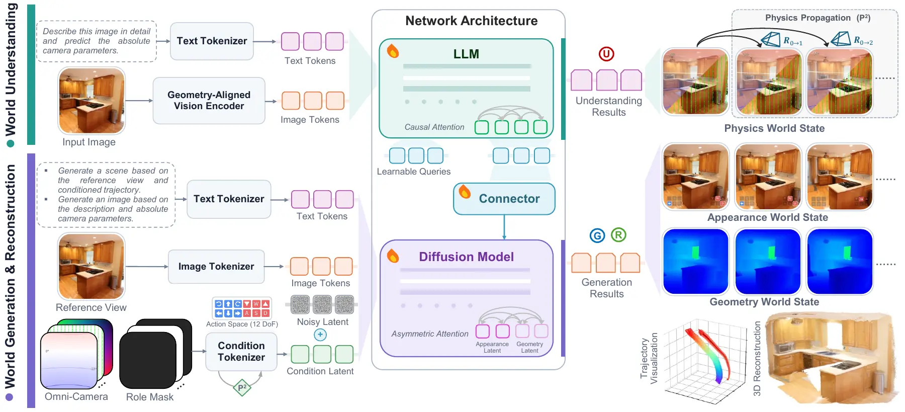
A gravity-aware absolute perspective field is paired with ray-based relative geometry, enabling precise control over camera intrinsics, orientation, and trajectory.
The model propagates physical constraints through generated trajectories, improving visual consistency and preserving gravity under challenging rotations and long camera motion.
Causal reasoning tokens and asymmetric diffusion attention let the same model interpret camera geometry and synthesize world-consistent observations.
Four capability families
Understands camera parameters, spatial relationships, and the physical principles behind an observation.
Generates observations from explicit camera poses across roll, pitch, yaw, and compound motion.
Supports image-to-3D, text-to-3D, long rotations, native states, and direct 3D reconstruction.
Enables interleaved conversation, world exploration, and self-calibrated interaction with generated environments.
Camera Understanding Results
Puffin-World estimates absolute camera roll, pitch, and vertical field of view (vFoV), grounding visual observations in a gravity-aligned camera-to-world frame. Across Stanford2D3D, MegaDepth, TartanAir, and LaMAR, it leads every median-error metric and most AUC metrics.
Median error and AUC at 1°, 5°, and 10° thresholds across four public benchmarks.
| Dataset | Approach | Roll [degrees] | Pitch [degrees] | vFoV [degrees] | |||||||||
|---|---|---|---|---|---|---|---|---|---|---|---|---|---|
| Error ↓ | AUC ↑ | Error ↓ | AUC ↑ | Error ↓ | AUC ↑ | ||||||||
| 1° | 5° | 10° | 1° | 5° | 10° | 1° | 5° | 10° | |||||
| Stanford2D3D | DeepCalib | 1.59 | 33.8 | 63.9 | 79.2 | 2.58 | 21.6 | 46.9 | 65.7 | 6.67 | 8.1 | 20.6 | 37.6 |
| Perceptual | 2.08 | 26.8 | 53.8 | 70.7 | 3.17 | 21.5 | 41.8 | 57.8 | 13.84 | 2.8 | 7.7 | 16.1 | |
| CTRL-C | 3.04 | 23.2 | 43.0 | 56.9 | 3.43 | 18.3 | 38.6 | 53.8 | 8.50 | 7.7 | 18.2 | 31.5 | |
| MSCC | 3.43 | 13.5 | 36.8 | 57.3 | 2.64 | 22.6 | 45.0 | 60.5 | 5.81 | 9.6 | 23.8 | 41.6 | |
| ParamNet | 1.14 | 44.6 | 73.9 | 84.8 | 1.94 | 29.2 | 56.7 | 73.1 | 9.01 | 5.8 | 14.3 | 27.8 | |
| SVA | - | 21.7 | 24.6 | 25.8 | - | 15.4 | 19.9 | 22.4 | - | 6.2 | 11.5 | 15.2 | |
| UVP | 0.52 | 65.3 | 74.6 | 79.1 | 0.95 | 51.2 | 63.0 | 69.2 | 3.65 | 22.2 | 39.5 | 51.3 | |
| GeoCalib | 0.40 | 83.1 | 91.8 | 94.8 | 0.93 | 52.3 | 74.8 | 84.6 | 3.21 | 17.4 | 40.0 | 59.4 | |
| AnyCalib† | - | - | - | - | - | - | - | - | 2.55 | 21.1 | 46.8 | 64.6 | |
| Puffin-World | 0.29 | 93.1 | 97.4 | 98.5 | 0.53 | 73.3 | 88.8 | 94.0 | 1.62 | 34.5 | 61.1 | 76.4 | |
| MegaDepth | DeepCalib | 1.41 | 34.6 | 65.4 | 79.4 | 5.19 | 11.9 | 27.8 | 44.8 | 11.14 | 5.6 | 12.1 | 22.9 |
| Perceptual | 1.07 | 47.9 | 72.4 | 83.2 | 3.49 | 19.8 | 39.1 | 54.2 | 13.40 | 2.9 | 8.2 | 16.8 | |
| CTRL-C | 0.88 | 54.5 | 75.0 | 84.2 | 4.80 | 16.6 | 33.2 | 46.5 | 18.65 | 2.0 | 5.8 | 12.8 | |
| MSCC | 0.90 | 53.1 | 72.8 | 82.1 | 5.73 | 19.0 | 33.2 | 44.3 | 10.80 | 6.0 | 14.6 | 26.2 | |
| ParamNet | 1.17 | 43.4 | 70.7 | 82.2 | 3.99 | 15.4 | 34.5 | 53.3 | 11.01 | 3.2 | 10.1 | 21.3 | |
| SVA | - | 31.9 | 35.0 | 36.2 | - | 13.6 | 20.6 | 24.9 | - | 9.4 | 16.1 | 21.1 | |
| UVP | 0.51 | 69.2 | 81.6 | 86.9 | 4.59 | 21.6 | 36.2 | 47.4 | 10.92 | 8.2 | 18.7 | 29.8 | |
| GeoCalib | 0.36 | 82.6 | 90.6 | 94.0 | 1.94 | 32.4 | 53.3 | 67.5 | 4.46 | 13.6 | 31.7 | 48.2 | |
| AnyCalib† | - | - | - | - | - | - | - | - | 3.14 | 19.4 | 40.8 | 59.1 | |
| Puffin | 0.32 | 84.9 | 93.4 | 96.2 | 1.08 | 47.6 | 68.2 | 79.4 | 2.42 | 23.9 | 47.8 | 64.1 | |
| Puffin-World | 0.28 | 87.7 | 94.2 | 96.7 | 1.01 | 49.7 | 69.3 | 79.6 | 2.41 | 24.8 | 48.8 | 65.5 | |
| TartanAir | DeepCalib | 1.95 | 24.7 | 55.4 | 71.5 | 3.27 | 16.3 | 38.8 | 58.5 | 8.07 | 1.5 | 8.8 | 27.2 |
| Perceptual | 2.24 | 23.2 | 48.6 | 66.7 | 2.86 | 23.5 | 44.6 | 61.5 | 15.06 | 5.1 | 8.9 | 17.1 | |
| CTRL-C | 1.68 | 32.8 | 59.1 | 74.1 | 2.39 | 24.6 | 48.6 | 65.2 | 5.64 | 10.7 | 25.4 | 43.5 | |
| MSCC | 3.50 | 15.0 | 37.2 | 57.7 | 3.48 | 18.8 | 38.6 | 54.3 | 11.18 | 4.4 | 11.8 | 23.0 | |
| ParamNet | 1.63 | 34.5 | 59.2 | 73.9 | 3.05 | 19.4 | 42.0 | 60.3 | 8.21 | 6.0 | 16.8 | 31.6 | |
| SVA | 9.48 | 32.4 | 39.6 | 44.1 | 18.46 | 21.2 | 28.8 | 34.5 | 43.01 | 8.8 | 16.1 | 21.6 | |
| UVP | 0.89 | 52.1 | 64.8 | 71.9 | 2.48 | 36.2 | 48.8 | 58.6 | 9.15 | 15.8 | 25.8 | 35.7 | |
| GeoCalib | 0.43 | 71.3 | 83.8 | 89.8 | 1.49 | 38.2 | 62.9 | 76.6 | 4.90 | 14.1 | 30.4 | 47.6 | |
| AnyCalib† | - | - | - | - | - | - | - | - | 3.62 | 15.5 | 36.4 | 55.1 | |
| Puffin | 0.40 | 71.7 | 86.2 | 92.1 | 0.95 | 51.0 | 68.2 | 79.3 | 7.48 | 16.3 | 28.5 | 39.0 | |
| Puffin-World | 0.31 | 80.1 | 90.0 | 94.2 | 0.67 | 60.2 | 78.1 | 87.2 | 2.34 | 26.6 | 46.4 | 59.5 | |
| LaMAR | DeepCalib | 1.15 | 44.1 | 73.9 | 84.8 | 4.68 | 10.8 | 28.3 | 49.8 | 10.93 | 0.7 | 13.0 | 24.0 |
| Perceptual | 1.29 | 40.0 | 68.9 | 81.6 | 2.83 | 21.2 | 44.7 | 62.6 | 17.78 | 3.0 | 5.3 | 10.7 | |
| CTRL-C | 1.20 | 43.5 | 70.9 | 82.5 | 1.94 | 27.6 | 54.7 | 70.2 | 5.64 | 9.8 | 24.6 | 43.2 | |
| MSCC | 1.44 | 39.6 | 60.7 | 72.8 | 3.02 | 20.9 | 41.8 | 55.7 | 14.78 | 3.2 | 8.3 | 16.8 | |
| ParamNet | 0.93 | 51.7 | 77.0 | 86.0 | 2.15 | 27.0 | 52.7 | 70.2 | 14.71 | 2.8 | 6.8 | 14.3 | |
| SVA | - | 8.6 | 9.2 | 9.7 | - | 3.4 | 5.7 | 7.0 | - | 1.2 | 2.7 | 4.1 | |
| UVP | 0.38 | 72.7 | 81.8 | 85.7 | 1.34 | 42.3 | 59.9 | 69.4 | 5.57 | 15.6 | 30.6 | 43.5 | |
| GeoCalib | 0.28 | 86.4 | 92.5 | 95.0 | 0.87 | 55.0 | 76.9 | 86.2 | 3.03 | 19.1 | 41.5 | 60.0 | |
| AnyCalib† | - | - | - | - | - | - | - | - | 2.25 | 24.6 | 51.6 | 70.5 | |
| Puffin | 0.38 | 80.6 | 89.8 | 93.5 | 0.71 | 61.7 | 78.9 | 86.4 | 3.62 | 17.0 | 37.3 | 53.1 | |
| Puffin-World | 0.26 | 85.8 | 92.5 | 95.3 | 0.71 | 63.5 | 81.2 | 88.2 | 2.73 | 19.0 | 43.0 | 59.4 | |
BestSecond best AnyCalib† is specialized for camera-intrinsic estimation and is included as a reference.
Camera-Controllable Generation Results
On Puffin-Cam-Bench, Puffin-World combines low angular error with competitive image fidelity, producing visually convincing images that remain closely aligned with the requested camera configuration.
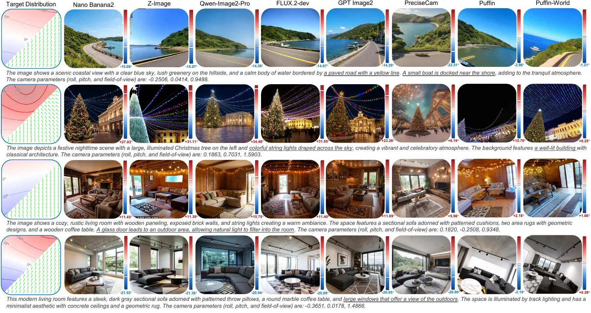
3D World Modeling Results
Puffin-World extends single-view generation to multi-view world modeling with explicit camera trajectories. It supports image-to-3D and text-to-3D generation, large rotations, compound motion, native appearance–geometry–physics prediction, and direct 3D reconstruction.
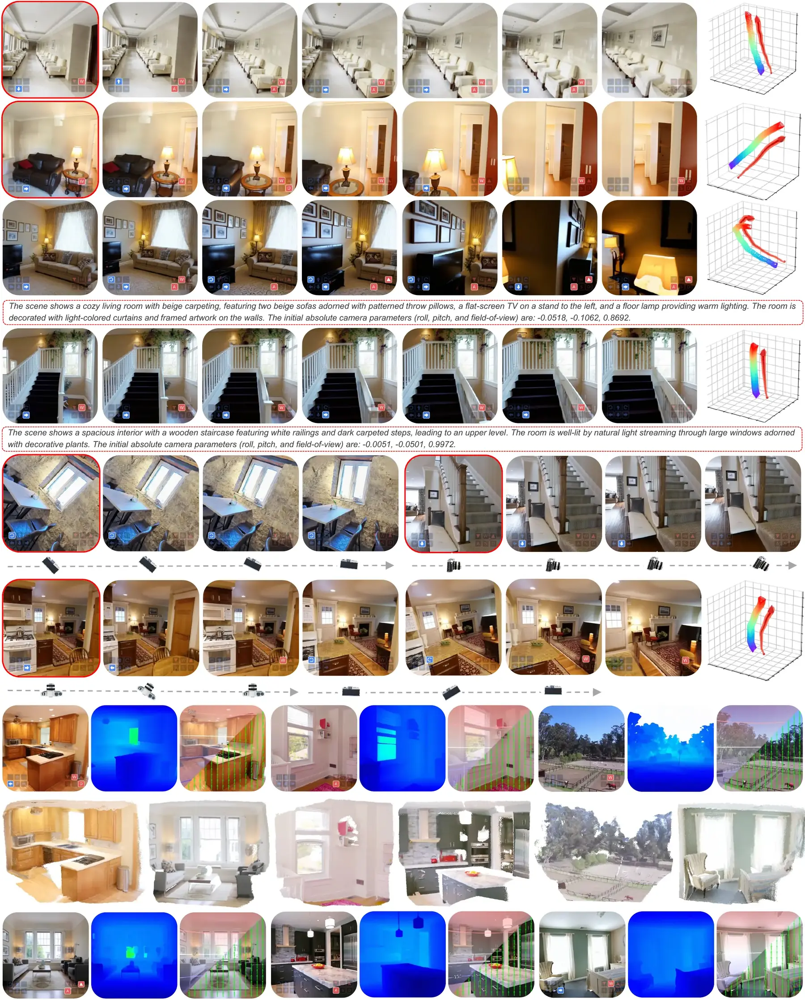
Physics propagation
Physics propagation anchors all views to a shared gravity-aligned frame, improving reconstruction quality and camera alignment together. The qualitative ablation below compares generated views with and without PP using up-vector error, revealing reduced horizon drift and more stable camera orientation.
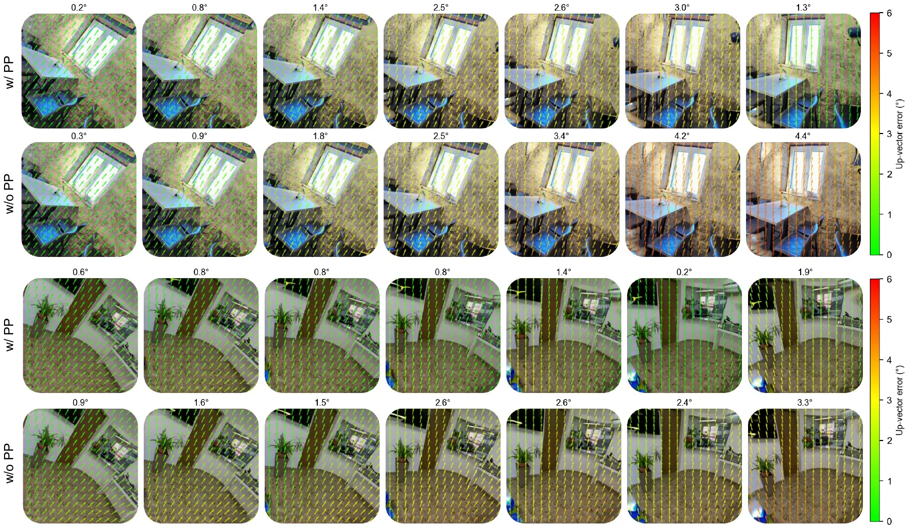
Scaling with Puffin-16M
Puffin-16M combines dense camera-aware visual supervision with trajectory data that covers challenging pitch, yaw, roll, and compound motion.
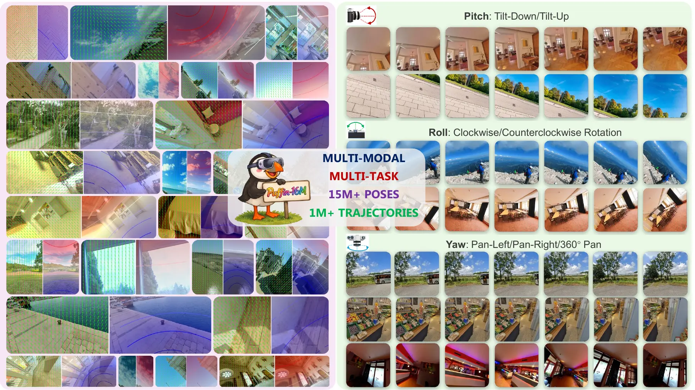
Citation
@article{liao2026puffinworld,
title = {Puffin-World: Scaling a Unified Multimodal Model with Native 3D World States},
author = {Liao, Kang and Luo, Yihang and Wu, Xiao-Ming and Jin, Linyi and Wu, Size and Lin, Chunyu and Zhao, Yao and Wang, Fei and Li, Wei and Loy, Chen Change},
journal = {Preprint},
year = {2026}
}